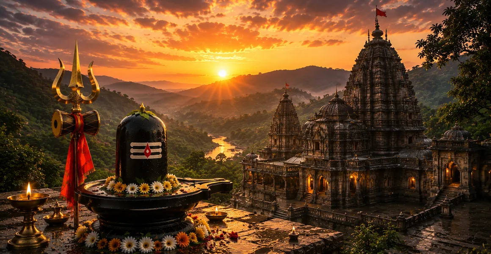

वैद्यनाथ का प्राकट्य
कोटिरुद्र संहिता के अठारहवें अध्याय में वैद्यनाथ ज्योतिर्लिंग की दिव्य कथा का वर्णन किया गया है, जिसमें भगवान शिव को सभी शारीरिक और आध्यात्मिक कष्टों के सर्वोच्च उपचारक के रूप में उजागर किया गया है।
यह रावण की गहन भक्ति और तपस्या, पवित्र लिंग को ले जाने के परीक्षणों और अंततः उसकी स्थायी स्थापना का वर्णन करता है।
यह अध्याय बताता है कि कैसे दैवीय करुणा न केवल नश्वर बीमारियों को बल्कि भौतिक संसार के मूलभूत बंधन को भी ठीक करती है।
अध्याय 18 की मुख्य बातें
रावण की भक्ति
रावण ने भगवान शिव का परम आशीर्वाद प्राप्त करने के लिए घोर तपस्या की।
सर्वोच्च उपचारक
भगवान शिव वैद्यनाथ के रूप में प्रकट होकर शरीर और आत्मा के रोगों का इलाज करते हैं।
पवित्र लिंग
रावण को दिया गया शक्तिशाली आत्मलिंग पृथ्वी को आशीर्वाद देने के लिए नियत था।
दिव्य लीला
दैवीय हस्तक्षेप से यह सुनिश्चित हो गया कि लिंग देवघर में स्थायी रूप से स्थापित हो गया।
कष्टों का निवारण
वैद्यनाथ की पूजा करने वाले भक्त पुरानी बीमारियों और दुखों से मुक्त हो जाते हैं।
शाश्वत अभयारण्य
यह तीर्थस्थल उपचार और आध्यात्मिक मुक्ति का एक शक्तिशाली केंद्र है।
इस अध्याय में मुख्य विषय
- 01रावण की घोर तपस्या और त्याग→
- 02रावण की भक्ति से प्रसन्न हुए भगवान शिव→
- 03पवित्र आत्मलिंग का अनुदान→
- 04लिंग के परिवहन पर लगाई गई शर्त→
- 05ब्रह्मांड की रक्षा के लिए दिव्य रणनीति→
- 06देवघर में लिंग को पृथ्वी पर स्थापित करना→
- 07वैद्यनाथ की स्थायी अभिव्यक्ति→
- 08भगवान शिव सर्वोच्च उपचारक (वैद्य) के रूप में→
- 09उपचार गुण और पूजा के गुण→
- 10स्वास्थ्य, शांति और मोक्ष की प्राप्ति→
- 11अध्याय 19 की ओर →
रावण की घोर तपस्या और त्याग
अध्याय 18 लंका के राजा रावण द्वारा भगवान शिव की परम कृपा प्राप्त करने के लिए की गई गहन तपस्या का विवरण देकर शुरू होता है।
उन्होंने पूर्ण समर्पण की अभिव्यक्ति के रूप में अपने शारीरिक अस्तित्व के कुछ हिस्सों को पवित्र अग्नि में अर्पित करते हुए, भक्ति के चरम कार्य किए।
रावण की भक्ति से प्रसन्न हुए भगवान शिव
इस अद्वितीय दृढ़ संकल्प और बलिदान से बहुत प्रभावित होकर, भगवान शिव अपनी संपूर्ण महिमा के साथ रावण के सामने प्रकट हुए।
भगवान ने उसकी भक्ति की सराहना की और उसे मनचाहा वरदान मांगने का निर्देश दिया।
पवित्र आत्मलिंग का अनुदान
लंका के लिए अजेय सुरक्षा और सर्वोच्च शक्ति की इच्छा रखते हुए, रावण ने भगवान शिव का व्यक्तिगत आत्मलिंग माँगा।
उनकी इच्छा को स्वीकार करते हुए, भगवान ने पवित्र लिंग को इसके सुरक्षित परिवहन के लिए एक महत्वपूर्ण शर्त के साथ सौंप दिया।
लिंग के परिवहन पर लगाई गई शर्त
शिव ने रावण को चेतावनी दी कि लंका की यात्रा के दौरान आत्मलिंग को कहीं भी जमीन को नहीं छूना चाहिए; यदि इसे नीचे रख दिया जाए तो यह हमेशा के लिए वहीं स्थिर हो जाएगा।
रावण ने शर्त स्वीकार कर ली और दैवीय प्रभार लेकर विजयी होकर वापस चला गया।
ब्रह्मांड की रक्षा के लिए दिव्य रणनीति
इस बात से चिंतित होकर कि रावण के पास आत्मलिंग होने से ब्रह्मांडीय संतुलन बिगड़ जाएगा, देवताओं ने भगवान विष्णु और भगवान गणेश से एक दिव्य रणनीति मांगी।
यात्रा के दौरान रावण की सहनशक्ति और राहत की आवश्यकता का परीक्षण करने के लिए एक भ्रम रचा गया था।
देवघर में लिंग को पृथ्वी पर स्थापित करना
तत्काल प्राकृतिक आग्रह से उबरकर और दैवीय माया की सहायता से, रावण ने लिंग को एक छिपे हुए चरवाहे (भगवान गणेश) को क्षण भर के लिए सौंप दिया।
इसे और अधिक धारण करने में असमर्थ होने पर, गणेश ने इसे देवघर में जमीन पर रख दिया, जिससे यह स्थायी रूप से पृथ्वी पर जड़ हो गया।
वैद्यनाथ की स्थायी अभिव्यक्ति
हालाँकि बाद में रावण ने इसे उखाड़ने की बहुत कोशिश की, लेकिन लिंग अचल रहा और स्वयं को गौरवशाली वैद्यनाथ ज्योतिर्लिंग के रूप में स्थापित किया।
यह पवित्र स्थल दैवीय कृपा चाहने वाले मनुष्यों के लिए एक सर्वोच्च तीर्थस्थल बन गया।
भगवान शिव सर्वोच्च उपचारक (वैद्य) के रूप में
शास्त्र बताते हैं कि शिव को यहां वैद्यनाथ के रूप में क्यों सम्मानित किया जाता है: वह परम चिकित्सक हैं जो सभी शारीरिक रोगों और कर्म संबंधी पीड़ाओं को ठीक करते हैं।
जिस प्रकार एक मास्टर चिकित्सक बीमारी के मूल कारण को दूर कर देता है, उसी प्रकार भगवान शिव मानव पीड़ा और पुनर्जन्म के मूल कारण को दूर कर देते हैं।
उपचार गुण और पूजा के गुण
आस्था के साथ वैद्यनाथ ज्योतिर्लिंग की पूजा करने से चमत्कारी उपचार मिलता है, शारीरिक जीवन शक्ति और मानसिक शांति बहाल होती है।
इस मंदिर में सच्ची प्रार्थना के माध्यम से भक्तों को गहरे भय और बीमारियों से मुक्ति मिल जाती है।
स्वास्थ्य, शांति और मोक्ष की प्राप्ति
अध्याय इस बात पर जोर देता है कि जो लोग वैद्यनाथ की कहानी सुनते या पढ़ते हैं उन्हें मजबूत स्वास्थ्य, आंतरिक शांति और परम मोक्ष प्राप्त होता है।
भगवान की कृपा भौतिक अस्तित्व के कष्टों से पूर्ण मुक्ति सुनिश्चित करती है।
अध्याय 19 की ओर
वैद्यनाथ की उपचारात्मक महिमा का वर्णन करने के बाद, कथा अगले पवित्र ज्योतिर्लिंग को प्रकट करने की तैयारी करती है।
पाठकों को अध्याय 19 में नागेश्वर के गौरवशाली मंदिर का पता लगाने के लिए आगे बढ़ने का निर्देश दिया गया है।
अध्याय 18 की मुख्य शिक्षाएँ
भक्ति का प्रतिफल
अत्यधिक समर्पण और त्याग भगवान शिव की गहन कृपा का आह्वान करते हैं।
दिव्य उपचार
भगवान शिव शारीरिक रोगों और आध्यात्मिक अज्ञान के परम उपचारक हैं।
ब्रह्मांडीय संतुलन
ईश्वरीय हस्तक्षेप सच्चे भक्तों की इच्छाओं को पूरा करते हुए ब्रह्मांड की रक्षा करते हैं।
स्थायी अभयारण्य
देवघर वैद्यनाथ ज्योतिर्लिंग के घर के रूप में सदैव धन्य है।
भय से मुक्ति
मंदिर में पूजा करने से पुरानी बीमारियाँ और नश्वर भय दूर हो जाते हैं।
आध्यात्मिक नवीनीकरण
वैद्यनाथ का स्मरण करने से आंतरिक शांति मिलती है और परम मुक्ति मिलती है।
आध्यात्मिक चिंतन
वैद्यनाथ की कथा हमें सिखाती है कि भगवान शिव अपने भक्तों के सांसारिक और आध्यात्मिक कल्याण दोनों की परवाह करते हैं। वैद्य के रूप में, वह न केवल शरीर को पीड़ित करने वाली शारीरिक बीमारियों को संबोधित करते हैं, बल्कि अहंकार और अज्ञान की गहन आध्यात्मिक बीमारी को भी संबोधित करते हैं जो आत्मा को बांधती है। देवघर में रावण और पवित्र प्रतिष्ठान की कहानी के माध्यम से, पाठ साधकों को आश्वस्त करता है कि भगवान के प्रति सच्चे समर्पण से पूर्ण उपचार और शाश्वत शांति मिलती है।
अध्याय 18 का संदेश जीना
सर्वोच्च भगवान की दिव्य उपचार शक्ति पर भरोसा करते हुए, अपनी दैनिक चुनौतियों का सामना अटूट विश्वास के साथ करें।
आंतरिक शुद्धता, करुणा और दैवीय इच्छा के प्रति समर्पण विकसित करके आध्यात्मिक स्वास्थ्य की तलाश करें।
अहंकार और भय से जुड़ाव छोड़ें, जिससे दिव्य कृपा आपके मन और शरीर के भीतर सद्भाव बहाल कर सके।
प्रमुख आध्यात्मिक अवधारणाएँ
सर्वोच्च चिकित्सक और आत्माओं के उपचारक के रूप में भगवान शिव।
भगवान शिव का व्यक्तिगत दिव्य लिंग रावण को प्रदान किया गया।
लंका के राजा द्वारा किया गया घोर तप और यज्ञ
स्थायी सांसारिक घर जहां आत्मलिंग जड़ हो गया।
ब्रह्मांडीय संतुलन बनाए रखने और ब्रह्मांड की रक्षा के लिए दिव्य रणनीतियाँ।
शारीरिक रोग और कर्म बंधन दोनों का नाश।
अध्याय सारांश
कोटिरुद्र संहिता अध्याय 18 वैद्यनाथ ज्योतिर्लिंग की प्रेरक कथा का वर्णन करता है। रावण की गहन भक्ति के माध्यम से, दिव्य लीला के माध्यम से आत्मलिंग को पृथ्वी पर लाया गया और देवघर में स्थायी रूप से स्थापित किया गया। सर्वोच्च चिकित्सक के रूप में सम्मानित, भगवान शिव सभी शारीरिक और आध्यात्मिक रोगों को ठीक करते हैं, अध्याय 19 में नागेश्वर की यात्रा जारी रखने से पहले साधकों को स्वास्थ्य, शांति और मुक्ति की ओर मार्गदर्शन करते हैं।
अक्सर पूछे जाने वाले प्रश्न
1. कोटिरुद्र संहिता अध्याय 18 का मुख्य विषय क्या है?
अध्याय 18 में वैद्यनाथ ज्योतिर्लिंग के प्रकटीकरण, रावण की गहन भक्ति और शारीरिक और आध्यात्मिक रोगों के अंतिम उपचारक के रूप में भगवान शिव की कृपा का विवरण दिया गया है।
2. भगवान शिव को वैद्यनाथ क्यों कहा जाता है?
भगवान शिव को वैद्यनाथ कहा जाता है क्योंकि वे सर्वोच्च चिकित्सक (वैद्य) के रूप में कार्य करते हैं जो नश्वर कष्टों, बीमारियों और संसार की अंतिम बीमारी को ठीक करते हैं।
3. वैद्यनाथ की कहानी में रावण की क्या भूमिका है?
रावण ने भगवान शिव को प्रसन्न करने के लिए कठोर तपस्या की और अत्यधिक बलिदान दिए, जिससे पवित्र लिंग को लंका की ओर ले जाने का आशीर्वाद प्राप्त हुआ।
4. देवघर में ज्योतिर्लिंग स्थायी रूप से कैसे स्थापित हुआ?
वरुण और भगवान गणेश के दैवीय हस्तक्षेप के कारण, रावण को लिंग को जमीन पर रखने के लिए मजबूर होना पड़ा, जहां वह स्थायी रूप से जड़ हो गया।
5. अध्याय 18 आसपास के अध्यायों से कैसे जुड़ता है?
अध्याय 18 अध्याय 17 (त्र्यंबकेश्वर की महिमा) के बाद आता है और अध्याय 19 (नागेश्वर की महिमा) से पहले आता है।
6. वैद्यनाथ की पूजा से भक्तों को क्या लाभ मिलता है?
वैद्यनाथ की पूजा करने से रोग ठीक होते हैं, मानसिक कष्ट दूर होते हैं और सर्वोच्च आध्यात्मिक स्वास्थ्य और मुक्ति मिलती है।
"शरीर और आत्मा के सर्वोच्च चिकित्सक के रूप में, भगवान वैद्यनाथ सभी नश्वर कष्टों को ठीक करते हैं और उनकी शरण में आने वालों को शाश्वत शांति प्रदान करते हैं।"
कोटिरुद्र संहिता के माध्यम से जारी रखें
अध्याय 18 वैद्यनाथ की अभिव्यक्ति का अन्वेषण करता है। अध्याय 19, नागेश्वर की महिमा को जारी रखें।